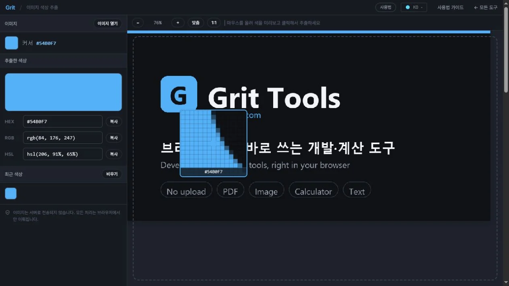

100%
| 마우스를 올려 색을 미리보고 클릭해서 추출하세요
이미지를 끌어다 놓으세요
또는 ‘이미지 열기’로 선택하세요
‘이미지 열기’ 버튼으로 고르거나 이미지 파일을 화면에 끌어다 놓으세요. 이미지는 서버로 전송되지 않습니다.
이미지 위로 마우스를 움직이면 따라다니는 돋보기가 픽셀을 확대해 보여줍니다. 원하는 지점을 클릭하면 그 색이 추출됩니다.
추출한 색의 HEX·RGB·HSL 값을 각각 ‘복사’ 버튼으로 클립보드에 담으세요. 추출한 색은 ‘최근 색상’ 팔레트에 쌓이고, 스와치를 클릭하면 다시 선택됩니다.

디자인 시안, 사진, 스크린샷 어디에서든 “이 색이 정확히 무슨 값이지?”가 궁금할 때 쓰는 스포이드(색 추출) 도구입니다. 이미지를 불러온 뒤 원하는 지점을 클릭하면 그 픽셀의 색을 HEX·RGB·HSL 세 가지 형식으로 뽑아 주고, 각 값을 버튼 하나로 클립보드에 복사할 수 있습니다. 웹·앱 화면에 쓰인 브랜드 색을 그대로 따와 CSS에 붙이거나, 사진 속 특정 부분의 색조를 확인할 때 편리합니다.
불러온 이미지는 브라우저 안에서만 열려 픽셀을 읽으며, 어떤 서버로도 업로드되지 않습니다. 공개 전 시안이나 내부 자료의 색을 뽑아도 파일이 밖으로 나가지 않으니 안심하고 쓸 수 있습니다.
HEX·RGB·HSL 값으로 나타나고, 각 행의 ‘복사’ 버튼으로 원하는 형식만 복사합니다.HEX(#54B0F7)는 CSS·디자인 툴에서 가장 널리 쓰이는 표기로, 웹 색 지정에 그대로 붙여 넣기 좋습니다. RGB(rgb(84, 176, 247))는 각 채널을 0~255 숫자로 다뤄 코드에서 색을 계산하거나 조정할 때 편하고, HSL(hsl(205, 91%, 65%))은 색상·채도·명도로 나뉘어 “같은 색을 조금 더 밝게/연하게” 같은 조정을 직관적으로 하기 좋습니다. 같은 색이라도 목적에 맞는 형식을 골라 복사하면 이후 작업이 매끄럽습니다.
추출값은 언제나 이미지 원본 픽셀 기준이라, 화면에서 확대·축소해 봐도 실제 파일의 정확한 색을 읽습니다. 다만 JPG처럼 손실 압축된 이미지는 원래 색 주변에 미세한 노이즈가 섞일 수 있으니, 단색 영역이라면 여러 지점을 찍어 값을 비교해 보는 것이 안전합니다. 반투명 픽셀은 알파를 제외한 RGB 값으로 읽힙니다. 색을 뽑는 데 특화된 도구라 이미지를 편집하거나 저장하지는 않으며, 위치 좌표가 필요하면 좌표 추출기, 크기 조정이 필요하면 이미지 리사이즈를 함께 쓰면 됩니다.
이미지가 서버로 올라가나요?
아니요. 파일은 브라우저 안에서만 열려 픽셀을 읽고, 네트워크로 전송되지 않습니다. 공개 전 디자인도 안전하게 다룰 수 있습니다.
투명 배경(PNG)의 색도 추출되나요?
네. 해당 픽셀의 RGB 값을 읽습니다. 완전 투명한 곳은 배경색이 비치지 않은 원본 채널 값이 나오므로, 실제로 보이는 색이 필요하면 색이 채워진 부분을 클릭하세요.
여러 색을 한 번에 모을 수 있나요?
클릭할 때마다 ‘최근 색상’ 팔레트에 자동으로 쌓입니다. 스와치를 클릭하면 다시 선택되며 HEX가 복사돼, 배색 후보를 모으기 좋습니다.
복사한 값을 CSS에 바로 쓸 수 있나요?
네. HEX·RGB·HSL 모두 CSS 표준 표기 그대로 복사되므로 color·background 등에 붙여 넣으면 됩니다.